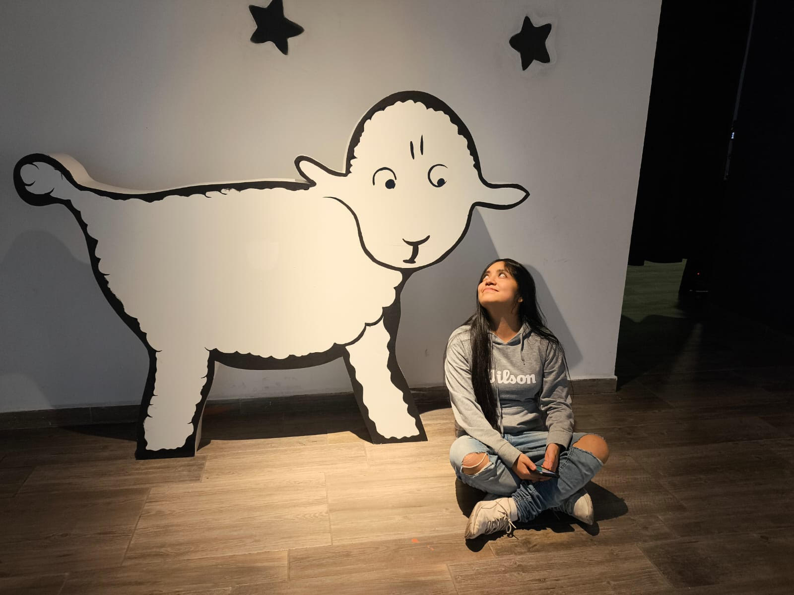

Soy egresada de Ingeniería Mecatrónica por la Facultad de Ingeniería de la UNAM. También cuento con formación técnica en computación, gracias a los Estudios Técnicos Especializados que cursé en la Escuela Nacional Preparatoria No. 5, de la misma universidad. Soy originaria de la Ciudad de México, me considero autodidacta y disfruto programar y resolver problemas, siempre buscando nuevas formas de aprender y aplicar mis conocimientos. Me gustan mucho los gatos y los perros pero debido a que considero que es mucha responsabilidad cuidar a alguién, prefiero gatos ya que son más independientes y no requieren tanto amor como los perros 🥺. Disfruto de la soledad o la compañía en silencio, también me gusta salir de vez en cuando pero no tengo mucha pila social.
No diría que tengo un género musical preferido, pero por lo general disfruto más la música instrumental, clásica o versiones sin letra de canciones que me resultan emocionantes. Para mí, la belleza de una canción suele estar en su parte instrumental. Si bien reconozco que hay voces extraordinarias, me cuesta concentrarme cuando la música tiene letra 😔. No tengo canciones favoritas como tal, ya que mis gustos varían según el mes, el día o incluso la hora. Aun así, he elegido algunas canciones que he escuchado repetidamente en distintos momentos.